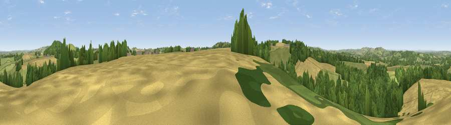

Viewpoint near Marksbury
#12277 in England · top 20% of its area beats it · near MarksburyWhere it is
The exact computed spot (ST 65875 62275). Click the marker for map links.
The view, rendered

A 360° render of this exact spot computed from the terrain model, tree cover and land cover — summer colours, afternoon light, calibrated against photographs of famous viewpoints. Real trees, hedges and buildings will differ in detail.
The panorama
Grey silhouette: terrain skyline in each direction (720 bearings, Earth curvature and refraction included). Dashed green: skyline with trees (+15 m) and buildings (+8 m) as obstacles. Blue strip: how far the ground is visible on each bearing.
Where the view opens
Wedge length = distance to the farthest visible ground on that bearing (vegetation-aware). Rings at 10, 25 and 50 km.
What fills the view
35% woodland · 32% grassland · 32% cropland ·
Angular shares of the visible panorama (visual magnitude), not map area. Landscape diversity 0.49 (0–1 Shannon).
Key numbers
More beautiful places nearby
The staircase of upgrades: each row has a higher view potential than everything closer. Driving times are estimates from straight-line distance, calibrated against real road routing — check an actual route before setting out.
| Place | Direction | Drive | Score |
|---|---|---|---|
| Winsbury Hill | NE · 1 km | ~4 min | 67.6 |
| Viewpoint near Stanton Prior | NE · 2 km | ~5 min | 70.7 |
| Viewpoint near Kelston | NE · 7 km | ~14 min | 74.2 |
| Viewpoint near North Stoke | NE · 8 km | ~16 min | 75.4 |
| Hanging Hill | NNE · 10 km | ~19 min | 76.4 |
| Beacon Batch | WSW · 18 km | ~31 min | 79.4 |
| Bleadon Hill [Loxton Hill] | W · 30 km | ~47 min | 79.6 |
| Viewpoint near Stinchcombe | NNE · 37 km | ~55 min | 80.5 |
51.35851, -2.49148 · source: screening · position refined by local search. Computed location — check access rights before visiting.